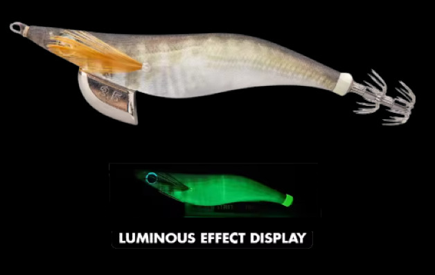

Perfecto para aguas claras, playas, escalones rocosos, puertos iluminados y días soleados.
🎨 Características
- Color base: Tonos naturales gris–marrón con sombreado progresivo. El cuerpo imita a la perfección pequeños peces presa, siendo uno de los patrones más realistas de la serie.
- Ojos: Iris metálico oscuro con pupila negra marcada, proporcionando un punto focal muy natural sin exceso de brillo.
- Brillo / Glow: Glow verde de intensidad media. Uniforme, suficiente para destacar la silueta sin romper la naturalidad del diseño.
- Acabado: Malla blanca ligeramente perlada, con textura suave que deja entrever el color interno. Transmite un aspecto muy “vivo” bajo el agua.
🌤️ Condiciones ideales de uso
- ☀️ Día soleado: Funciona muy bien en aguas claras, ofreciendo un aspecto natural que no alerta a los calamares.
- 🌫️ Aguas turbias: Menos eficaz, aunque el brillo verde aporta una ayuda extra para que destaque.
- 🌥️ Día nublado: Buen rendimiento gracias a su contraste discreto y brillo moderado.
- 🌅 Amanecer / Atardecer: Excelente opción imitando peces en fuga con luz tenue.
- 🌙 Noche sin luna: Destaca gracias a su luminiscencia verde; muy útil en zonas de poca profundidad o playas.
- 🌊 Aguas claras: Uno de los mejores entornos para este modelo; su naturalidad marca la diferencia.
🧠 Comportamiento esperado
- 👉 Ideal para calamares recelosos o presionados por pescadores.
- 👉 Movimiento natural y discreto: perfecto como “primer egi” para tantear condiciones.
- 👉 Glow medio que aporta visibilidad sin romper su esencia natural.
- 👉 Excelente en zonas de agua clara, rompeolas y playas con fondo arenoso.
⚙️ Resumen práctico
| Condición | Eficiencia |
|---|
| ☀️🌊 Día soleado / agua clara | 🔥 Excelente |
| ☁️💙 Día nublado | 🟢 Muy alta |
| 🌙🌑 Noche | 🟡 Media |
| 🦑😴 Calamares pasivos | 🟢🟢 Muy alta |
| 🦑🔥 Calamares agresivos | 🟡 Media |